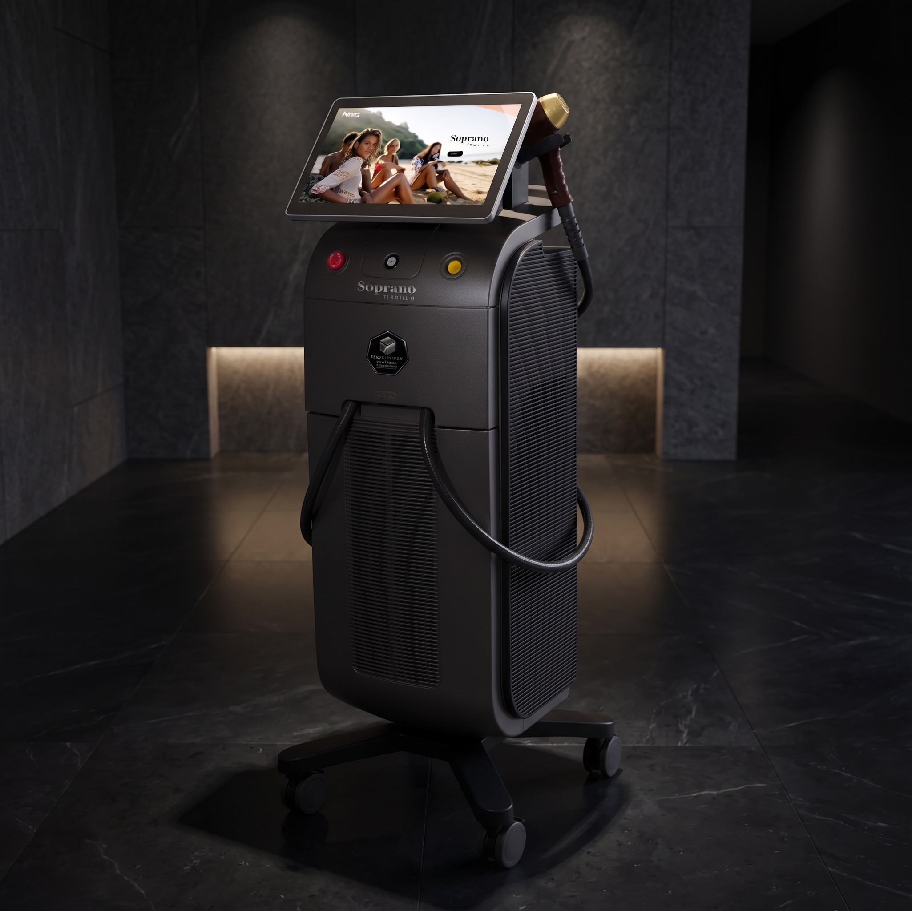

리프팅올타이트 · 소프라노 티타늄
결혼식이 코앞인데 다운타임 없는 리프팅 추천해주세요
결혼식 전에는 다운타임이 거의 없는 티타늄 리프팅이 적합합니다. 붓기·멍·자국이 적어 바로 일상 복귀가 가능하고, 얼굴선 탄력과 피부톤·광채를 함께 챙길 수 있습니다. 붉은기를 고려해 행사 3~7일 전 여유를 두는 것을 권합니다.
“결혼식이 코앞인데, 티 안 나면서 얼굴선은 살리고 싶어요.” 큰 행사를 앞두고 이런 문의가 많은데, 다운타임이 거의 없는 리프팅이 있습니다. 오늘은 또렷한 얼굴선과 빛나는 피부톤을 함께 살리는 티타늄 리프팅을 들여다봅니다.
Q1
중요한 일정 전에 받을 수 있는 리프팅이 있나요?
네, 다운타임이 거의 없는 레이저 리프팅이 있습니다. 붓기나 자국이 적어 티가 잘 나지 않기 때문입니다.
리프팅을 앞두고 가장 걱정하는 건 ‘붓거나 멍이 들어 행사를 망칠까’입니다. 티타늄 리프팅은 시술 후 붉은기 정도 외에는 눈에 띄는 자국이 적어, 바로 일상 복귀가 가능한 편입니다. 그래서 결혼식·촬영·면접처럼 중요한 날을 앞두고 선호됩니다. 힐하우스에서도 ‘맑고 탄탄하고 슬림한 피부’를 한 번에 잡는 타이트닝 시술로 소개합니다.

Q2
티타늄 리프팅은 어떤 원리인가요?
여러 파장의 레이저를 함께 써서, 피부 여러 깊이에 복합적으로 작용합니다.
티타늄 리프팅은 서로 다른 깊이까지 도달하는 여러 파장의 레이저를 동시에 사용합니다. 이 에너지가 콜라겐과 엘라스틴 생성을 자극해, 즉각적인 탄력감과 함께 장기적인 피부 재생을 유도합니다. 표면부터 깊은 층까지 폭넓게 작용하는 것이 특징입니다.
이렇게 여러 깊이를 함께 다루기 때문에, 탄력뿐 아니라 피부결과 톤까지 함께 정돈되는 효과를 기대할 수 있습니다.
Q3
왜 결혼식 전에 티타늄 리프팅이 좋나요?
다운타임이 거의 없고, 탄력과 함께 피부톤·광채까지 살아나기 때문입니다.
| 특징 | 티타늄 리프팅 |
|---|---|
| 다운타임 | 붓기·멍·자국이 적어 바로 일상 복귀 |
| 통증 | 부담이 적은 편 |
| 효과 | 탄력 + 피부톤·광채 개선 |
| 부위 | 얼굴선은 물론 목까지 활용 |
결혼식 전에는 얼굴선뿐 아니라 ‘화사한 피부톤’도 중요합니다. 티타늄 리프팅은 탄력과 톤을 함께 챙길 수 있어, 웨딩 준비에 잘 어울립니다. 올타이트가 고주파로 조이는 방식이라면, 티타늄은 레이저로 탄력과 피부톤·광채를 함께 챙기는 방식이라는 점이 다릅니다.

Q4
티타늄은 결혼식을 앞두고 언제 받으면 좋나요?
행사 직전보다, 조금 여유를 두고 받으시길 권합니다. 그래야 피부가 안정되고 효과도 자리 잡습니다.
다운타임이 적은 시술이지만, 시술 직후 약간의 붉은기가 있을 수 있어 며칠 여유를 두는 것이 안전합니다. 또 한 번보다 여유 있게 나눠 받으면 탄력이 더 오래 유지됩니다.
일정에 맞춘 시기는 상담을 통해 함께 정하는 것이 좋습니다. 효과와 다운타임은 개인차가 있으니, 중요한 날일수록 여유 있게 계획하시길 권합니다.